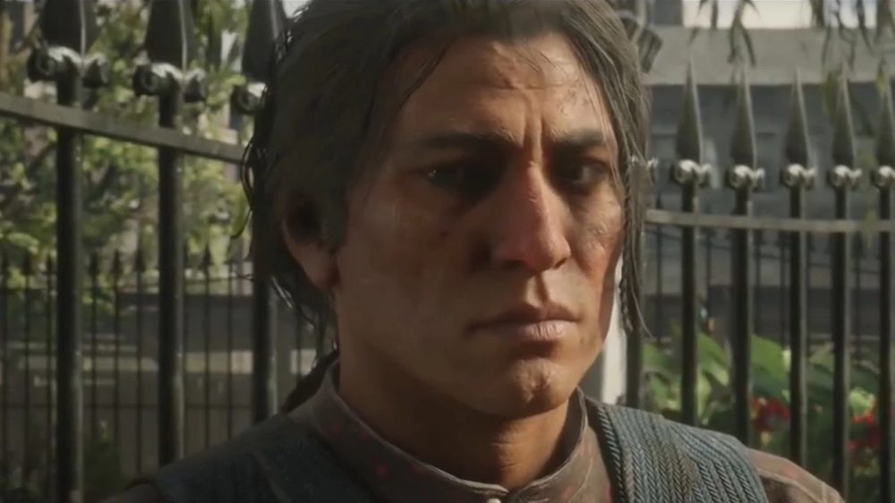
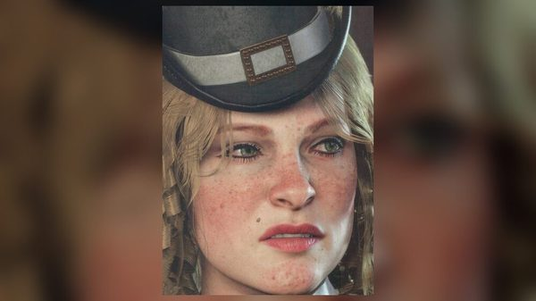
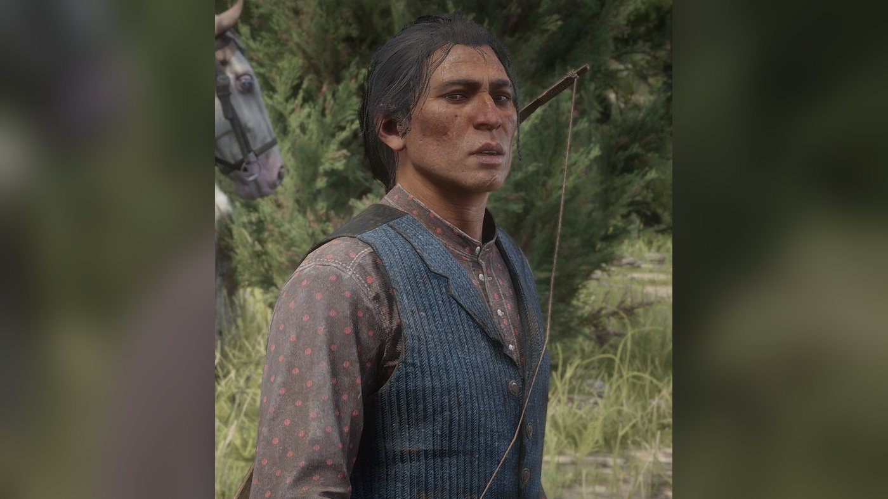
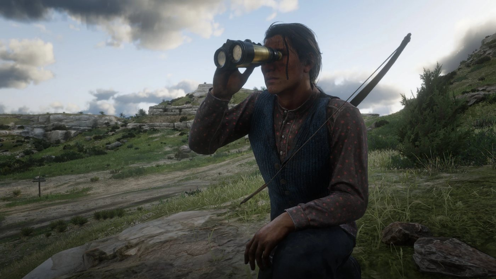
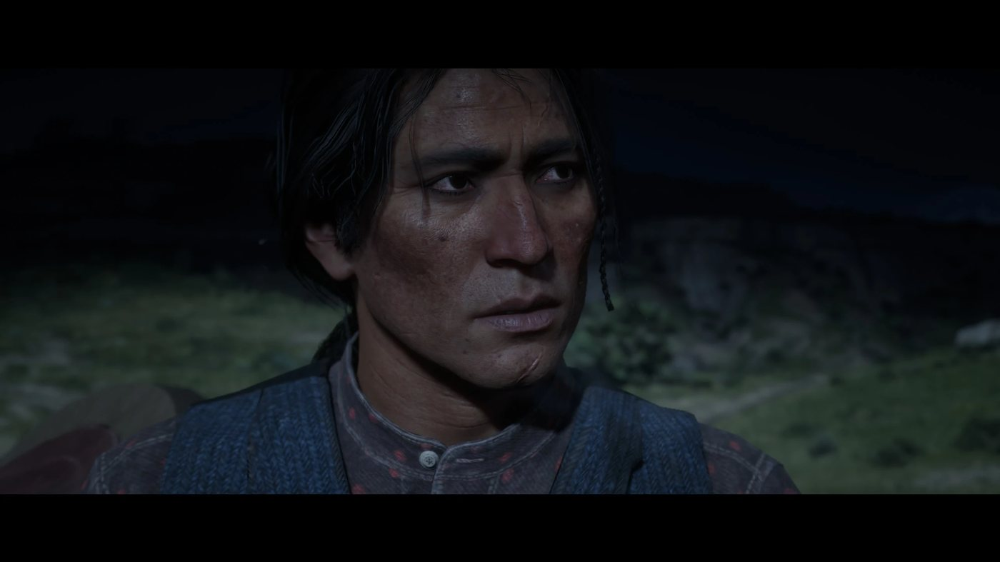
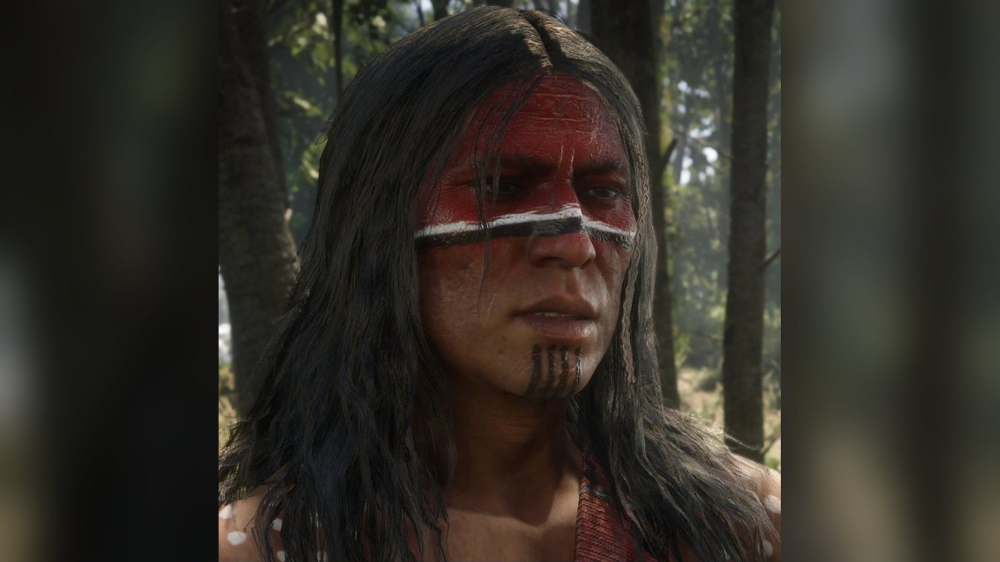
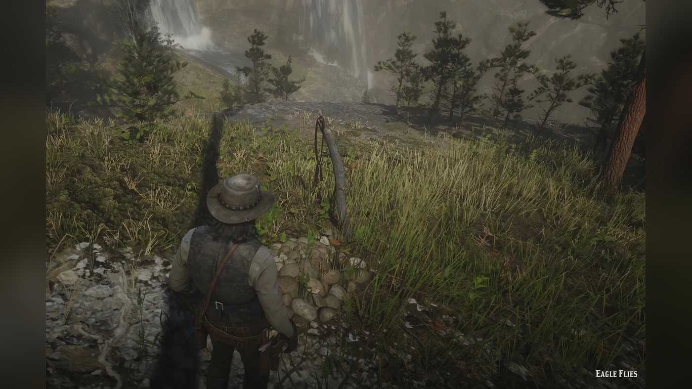

Character · Wapiti
Eagle Flies
Eagle Flies is the son of Rains Fall, chief of the Wapiti, a fictional Native American people, in Red Dead Redemption 2 (2018), set in 1899. His elder brother and his mother were killed before the story begins. Where his father seeks a peaceful settlement over the tribe's reservation, Eagle Flies predicts war and wants to fight the Army. In 1899 he helps Arthur Morgan steal a report on the oil under the reservation from the Cornwall refinery, then turns to raids against the Army with the support of Dutch van der Linde, who sees in the conflict a distraction for the gang.
Captured after an ambush on an Army patrol, he is freed from Fort Wallace by Arthur and Charles Smith. He then leads an attack on the Heartland Oil Fields against his father's wishes, saves Arthur there and is shot by Colonel Henry Favours; he dies in his father's tent on the reservation. Eagle Flies is played by Jeremiah Bitsui.
- Name
- Eagle Flies (his English name)
- Aliases
- The impetuous Prince (his father)
- Born
- Not given in the game
- Died
- 1899, Wapiti Indian Reservation (shot by Colonel Favours at the Heartland Oil Fields)
- People
- Wapiti
- Residence
- Wapiti Indian Reservation, Ambarino
- Family
- Rains Fall (father); an elder brother and his mother (killed; the brother by a drunken soldier, by his father's account)
- Allies
- Paytah, Arthur Morgan, Charles Smith, Dutch van der Linde
- Adversaries
- Colonel Henry Favours and the Army at Fort Wallace
- Games
- Red Dead Redemption 2
- Played by
- Jeremiah Bitsui
Biography
Origins
Red Dead Redemption 2 gives no birth date and no age for Eagle Flies. He is the son of Rains Fall, chief of the Wapiti, a Native American people living on a reservation in the Grizzlies East, in the state of Ambarino. According to the Red Dead Wiki, he is the chief's second son, and the tribe was moved onto the reservation at some point before 1899. His father gives the family's history himself in 1899: the elder son had his head smashed by a drunken soldier, and the chief's wife had her throat slit. The wiki states that both were killed by the United States Army. Its French edition places these deaths shortly before 1899; the English edition dates them only to some point before that year. By 1899, Eagle Flies is his father's only surviving child.
Red Dead Redemption 2 (1899)
Chapter 1: Colter
In "Eastward Bound", the gang leaves Colter for Horseshoe Overlook. A wheel comes off the wagon driven by Arthur Morgan and Hosea Matthews, and Charles Smith stays behind to help. While they refit it, three riders watch them from a cliff. Charles remarks that the riders would not have shown themselves if they wanted trouble, and Hosea says that white settlers treated the people of the region badly. The Red Dead Wiki identifies the three riders as Eagle Flies, his father and Paytah, a Wapiti warrior close to Eagle Flies. In Saint Denis, Rains Fall later tells Arthur that they saw him with the wagon train crossing the river at Cumberland Falls, and upstairs at the mayor's party.
Chapter 4: Saint Denis
In "The Gilded Cage", Eagle Flies and his father attend the garden party of Henri Lemieux, the mayor of Saint Denis. From a balcony, Angelo Bronte points out the guests to Dutch van der Linde and Arthur. He mocks the two Wapiti as they hand a letter to the mayor, saying that people stupid enough to be tricked by the Americans get what they deserve. The next morning, Dutch tells Arthur that the writer Evelyn Miller is in town lobbying officials for the chief, and suggests the gang might help.
In "American Fathers I", Miller stops Arthur outside the Saint Denis courthouse and introduces him to Rains Fall and his son. The chief explains that his people are to be moved again. Miller adds that this goes against the peace treaty signed three years earlier. Eagle Flies says this will mean war; his father answers that the Wapiti are now too weak to fight. Miller explains that prospectors have reported large oil reserves under the reservation to Leviticus Cornwall and to the state government, and that he needs proof. When Arthur asks how much the job pays, Eagle Flies remarks that all white men are mercenaries. Arthur laughs and answers that he is wanted in two states and that the government likes him no better than it likes them. Rains Fall promises to pay him well and sets a meeting with his son near Citadel Rock, west of the oil fields, a couple of days later. As the group heads to an appointment with a senator, Eagle Flies calls it a waste of time; his father insists that they must try everything.
In "American Fathers II", Eagle Flies is the mission giver. He waits for Arthur on a hill above Cornwall Kerosene & Tar, the refinery of the Heartland Oil Fields. He tells him that the foreman, Danbury, keeps the files in an office above the refinery floor, and that they should include a report from the Leland Oil Development Company. He suggests crawling under the fence or hiding in one of the wagons that keep rolling in, and offers to come if Arthur calls; Arthur reminds him that the plan was to keep him out of it. Arthur rides in under a wagon's cover in the rain, forces Danbury to hand over the file, then slips while climbing out of the window and lands among guards.
An oil well explodes before the guards can take him. The mission page states that Eagle Flies set off the blast. He calls Arthur over, and the two men shoot their way out of the refinery and ride off. Once clear, Eagle Flies says he enjoyed watching some of the oil burn and teases Arthur, who had promised to get in and out quietly. Arthur hands over the papers and thanks him for saving his life. Eagle Flies admits he does not know what to hope for, says the documents may be of some use, and pays him; the mission page gives the reward as 125 dollars. A camp scene with Charles later in the chapter is described under Relationships.
Chapter 5: Guarma
While Arthur, Dutch and others are stranded on Guarma, Charles spends time near the reservation. In "That's Murfree Country", on the way to Beaver Hollow, he tells Arthur that he ran into Rains Fall and Eagle Flies and has been helping where he can, and that things are bad there.
Chapter 6: Beaver Hollow
After "Visiting Hours", the Blackwater Ledger (No. 69) runs the article "Tensions High". It says that the Wapiti of the reservation remain warlike, "spurred on by their chief and his son", and that officers at nearby Fort Wallace consider armed hostilities a distinct possibility.
In "A Rage Unleashed", Eagle Flies rides into Beaver Hollow escorted by Karen Jones and Javier Escuella. Charles brings him to Arthur, who introduces him to Dutch; Eagle Flies explains that Arthur and Charles once did him a great favor by posing as mercenaries. Asked about his father, he answers that Rains Fall mistakes wisdom for weakness. The Army regiment at Fort Wallace has seized the tribe's horses: without them his people cannot hunt and will starve, and he calls it another act of war. He offers money. Charles reminds him that he told his father he would not fight over some horses; Dutch, who made no such promise, tells him to keep his money and agrees on the spot. Arthur and Charles go along to keep things from getting out of hand.
On the ride, Eagle Flies describes Colonel Henry Favours as a vile man whose regiment enjoys persecuting the tribe: the young have been taken from the reservation and sent to reform schools, along with many women, and medicine and supplies are deliberately withheld from the sick elders. Near Van Horn they meet Paytah, who has canoes ready. At night they paddle out to the Army boat, and Paytah wishes them luck as they come alongside. Arthur and Charles knock out the guards on deck. On Dutch's order, Arthur blows up the anchor mechanism with dynamite, and Dutch, at the wheel, runs the boat onto the rocks. The men ride the horses back to shore; Eagle Flies rounds up four and asks Arthur to bring in the rest. On the bank he says his father does not want to fight again. Dutch rides off with him to return the horses and plans some reconnaissance at Fort Wallace. When Charles points out that Rains Fall called fighting an impossible gamble, Eagle Flies replies that his father need not know.
Charles then asks Arthur to talk to Rains Fall. In "Archeology for Beginners", if the player accepts, the chief reproaches Arthur for the raid with his son, whom he calls an impetuous prince. He says he is a great disappointment to his son, who sees glory in death, and that his son is easily led. On the ride that follows, Arthur can tell him that he does not trust Dutch to have his son's best interests at heart. Arthur afterwards writes in his journal that he would like to stop Dutch from pushing the young man into something foolish. In "The Fine Art of Conversation", Rains Fall tells Arthur and Charles that his son has too much of a mind of his own. According to the mission page, if "Favored Sons" has just been played, Charles is angry on the way that Dutch got Eagle Flies arrested.
In "Favored Sons", Arthur joins Dutch, Eagle Flies, Paytah and armed Wapiti on high ground over a valley in Cumberland Forest. The plan is to fell trees with dynamite, trap an Army patrol in the valley, then tar and feather the soldiers; Eagle Flies assures Arthur that nobody will be killed. While Arthur and Dutch lay the charges, Eagle Flies keeps watch with his spotter, and the patrol turns out larger than expected. After the blast, he orders the trapped soldiers to drop their guns and says their humiliation of his people has gone on long enough. More soldiers arrive and the shooting starts. Eagle Flies remarks that his father will not be happy, then has the dead searched for anything that could help the tribe's case.
A cannon opens fire. Eagle Flies runs to Paytah, who has been hit, and finds him alive. When cavalry rides out from Fort Wallace, Arthur and Dutch flee on horseback without him; they escape by jumping from a cliff into a river. On the bank, Dutch says Eagle Flies must have been taken, and Arthur adds that he may be dead. The capture itself is not shown. The Red Dead Wiki says he was seized while trying to help the wounded Paytah, and that Paytah got away.
In "The King's Son", Rains Fall tells Arthur that the Army holds his son and will hang him for treason. Arthur decides to free him despite the chief's refusal. On the ride, Charles says Dutch saw that Eagle Flies was burning hot and fanned the flames. That night, Arthur and Charles get into Fort Wallace and find him strung up in a cell, trading insults with a guard; Charles kills the guard, and Arthur takes the keys and cuts him loose. Eagle Flies asks whether his father sent them to kill guards, and says sarcastically that he enjoys being tortured. The alarm sounds. He leads them to a hole in the wall he saw when he was brought in, but it has been repaired, and Arthur blows a new breach with a cannon. Eagle Flies escapes on Charles's horse, Taima, seated behind him, then the three go down the river in the canoes Charles left there. Under fire, Eagle Flies vows revenge on the Army and asks for a gun.
On the shore, Eagle Flies says he heals fast and will be fine in a day or so. He expects Favours to answer the rescue with more trouble, and says even his father may have to fight. When Arthur suggests the tribe should simply run, he asks where they would go. He thanks Arthur, and Charles takes him back to his father on a horse left behind by a soldier.
In "My Last Boy", Eagle Flies rides into Beaver Hollow at the head of armed warriors in war paint. He tells Dutch and Arthur that the Army tried to kill his people for oil and asks the gang to ride with them against the factory. Rains Fall arrives behind them, tells his son about his own wars and his dead family, begs him not to die for pride and, as his chief, implores him. Eagle Flies answers that his father's words mean nothing to him and leaves with his men for the Cornwall refinery. Rains Fall then asks Arthur for help, which reveals to Dutch that Arthur has been seeing the chief. Arthur says he will see what he can do and asks Charles and the others to come. Dutch says he will ride, then Sadie, John, Javier and Bill volunteer; Micah Bell and his two recruits stay behind. On the way, a wounded warrior tells them that Eagle Flies needs help.
At the Heartland Oil Fields, where Charles calls the scene a massacre, it is Charles who points out Eagle Flies crossing a walkway. Arthur decides to go for him and asks Dutch to draw the soldiers away; Dutch leads the rest toward the factory, while Charles and Sadie Adler ride with Arthur. Arthur kills a soldier grappling with him. Eagle Flies thanks them, asks where his men are, and insists that every warrior they find must be saved; he joins Arthur's group and calls out when Paytah is in danger. Once both groups have regrouped and most of the soldiers are dead, Dutch sends the others away, but Eagle Flies refuses to leave until he has found all his men, and Charles stays with him. Dutch and Arthur go into the warehouse for the state bonds Dutch is after.
On the way out, a burst pipe knocks Arthur to the ground and blinds him for a moment. A soldier tries to stab him, Arthur calls to Dutch for help, and Dutch hesitates, then leaves. Eagle Flies arrives and shoots the soldiers, but as he helps Arthur up, Colonel Favours shoots him in the abdomen. Arthur kills Favours before he can fire again. Arthur scolds Eagle Flies for the risk he took; Eagle Flies answers that Arthur saved his life more than once and that giving his own in return is as it should be. Outside, Arthur accuses Dutch of leaving him to die. He puts Eagle Flies on his horse and rides to the reservation with Charles and Paytah. On the way Eagle Flies asks to go back for the bodies of his men; Paytah promises they will and tells him to save his strength. Near the reservation, when Eagle Flies calls his name, Paytah tells him to save his breath.
At the reservation, Rains Fall asks for his son to be brought to him. Arthur and Charles carry Eagle Flies into his father's tent. Rains Fall takes his hand, and Eagle Flies dies there. The Red Dead Wiki's page on Eagle Flies says he dies in his father's arms. Outside, Charles tells Arthur that the Wapiti must move and that he will stay to help them. Later in the chapter, on the way to rescue Abigail Marston in the "Red Dead Redemption" mission, Arthur lists to Sadie the people Dutch has used and lost, and adds Eagle Flies to the list as another angry fool Dutch manipulated.
Epilogue (1907)
According to the Red Dead Wiki, the Wapiti buried Eagle Flies near the reservation before leaving it. The English wiki places his grave on the western side of Donner Falls; the French edition places it east of the falls. The wiki's pages disagree on when it can be visited: the Donner Falls page says from the epilogue, the page of the trophy "Paying Respects" says after "My Last Boy". A gallery caption on the English wiki shows John Marston visiting the grave in 1907. The 1907 newspaper article "Pump Jacks Sit Silent" (Blackwater Ledger No. 72) reports that the tribe went on the run after its attacks on the Army and the battle at the Cornwall factory, that many of its members were gunned down in Wyoming and that a few are believed to have reached Canada. The same article says the oil near the reservation proved minimal and that drilling has stopped.
During the epilogue, John Marston can meet Rains Fall at Annesburg station. This encounter has no transcript; according to the Red Dead Wiki, the chief has come back from Canada for a while to mourn his son, whose death he has not gotten over, before taking the train north again.
Epilogue 2: Beecher's Hope
The last scene of the ending credits that follow "American Venom" shows Rains Fall alone on a summit of the Grizzlies East. He watches an eagle fly away and wipes his eyes. The Red Dead Wiki's page on the credits ties the scene to the loss of his last son.
Personality
Rockstar's character descriptions of September 6, 2018 cover the Van der Linde gang and do not include Eagle Flies, and no official guide text on him has been found. In the game he is the Wapiti who argues for fighting the Army, against his father's line. Rains Fall tells Arthur: "My son thinks there is glory in death." He also says that his son "has a mind of his own... too much so". Eagle Flies sets a limit before the patrol ambush ("Nobody will be killed"), and in battle his concern is for his men: in Cumberland Forest he runs to the wounded Paytah, and at the oil fields he asks where his men are.
He is wary of the gang at first. When Arthur asks how much the job will pay, he tells his father: "Told you, they're all mercenaries." His view changes after the refinery, where the two men fight their way out together. In the Fort Wallace cell he answers his guard and his rescuers with dry jokes. Arthur sums him up for Rains Fall in "The King's Son": "He's very brave... very angry. He's me."
In his own words
When Arthur asks after his father in "A Rage Unleashed": "Father has confused wisdom with weakness. His people, my people... we've suffered too much... been lied to too much... now, they've taken our horses." On the seizure: "Colonel Favours is a liar and a murderer... his people won't stop until we're all dead. Without horses, we cannot hunt... without hunting... we will starve. This is another act of war."
To a guard outside his cell at Fort Wallace: "No, I think the snake was full up after eating your brain." When Arthur asks if he is all right: "Sure... I enjoy being tortured... clears the mind." In the canoe: "They'll pay for this. They'll wish they killed me when they had a chance." When Arthur suggests the tribe run away: "Where would we go?" At the oil fields: "Any men we see... we must save them."
Names
Eagle Flies is the English form of his name; his name in his own language is never given. His father calls him "the impetuous Prince" in front of Arthur, "my last son" and "My only boy... my precious boy" at Beaver Hollow. Dutch and Arthur address him as "son", and on the ride to the reservation Arthur calls him "this boy" and "my friend". Paytah calls him "brother". The French-language Red Dead Wiki names him Aigle-Qui-Vole.
Appearance
He is a young man with black hair, whose age is never given. In Saint Denis and at the refinery he wears his hair tied back. When he rides into Beaver Hollow for the attack on the oil fields, his hair is loose and his face is painted for war (see the gallery).
Relationships
Rains Fall
Rains Fall, chief of the Wapiti, is his father, and Eagle Flies is his last surviving son (see Origins). The two disagree about the Army from their first scene with Arthur: Rains Fall answers his prediction of war by saying the tribe cannot fight another war, and Eagle Flies later tells Dutch that his father mistakes wisdom for weakness (see In his own words). After the horse raid he says that his father need not know anything ("he'd rather live in ignorance"), and when Arthur tells him his father sent them to Fort Wallace, he asks: "My father... he told you to come and kill guards?"
Rains Fall's view of his son in "Archeology for Beginners" is told in the Biography; in "The King's Son" he adds that his son is foolish but still his son. His father's plea at Beaver Hollow, his answer, and his death in his father's tent are told in the Biography.

Arthur Morgan
Eagle Flies first sees Arthur with the gang's wagon train and at the mayor's party, then meets him outside the Saint Denis courthouse, where he takes him for a mercenary. After the refinery, Arthur thanks him for saving his life. When Arthur starts to tell Dutch what he and Charles did for him in "A Rage Unleashed", Eagle Flies finishes the sentence: "Pretended to be mercenaries... did me a great favor." Arthur shares his doubts about Dutch with Rains Fall and goes to Fort Wallace with Charles despite the chief's refusal (see Biography).
At the oil fields Eagle Flies saves Arthur, whom Dutch has left behind, and is shot by Colonel Favours (see Biography). On the ride to the reservation Arthur tells Charles: "If it wasn't for Eagle Flies, I'd be...", and calls him "a brave man" ("Your friend here... my friend... he's a brave man."). On the way to rescue Abigail in "Red Dead Redemption", Arthur names him to Sadie among the people Dutch has led to their deaths: "Another angry fool he used, just like he did with the rest of us."

Charles Smith
Charles has been helping on the reservation while Arthur was on Guarma (see Biography). In a rare chapter 4 camp scene, after "American Fathers II", Charles says he will be away for a few days because Eagle Flies has asked him to rescue some Native children from a reform school, and turns down Arthur's offer to come (Camp Events page of the Red Dead Wiki). In "A Rage Unleashed", Charles reminds him of his promise to Rains Fall (see Biography). When Eagle Flies says his father need not know about the raid, Charles answers: "Your father would rather you did not do anything so foolish!" On the way to Fort Wallace he tells Arthur that Dutch "saw Eagle Flies burned hot, and he fanned the flames".
Charles plans and leads the rescue from Fort Wallace and takes him home (see Biography). In the canoe, when Eagle Flies repeats Dutch's idea that the soldiers only have the power you allow them to have, Charles answers: "Well, Dutch says a lot of things." On the bank he tells him: "Hey, friend... let me take you back to your father." At the oil fields Charles rides with the group that reaches him, stays at his side while Dutch goes for the bonds ("I'm staying with you"), and carries him into his father's tent with Arthur.

Dutch van der Linde
Dutch meets him at Beaver Hollow in "A Rage Unleashed". When Eagle Flies offers money, Dutch tells him: "Put your money away, son." On the ride he explains to Arthur why he is helping: "Some good honest conflict between the army and the Indians... could be just the distraction we need." On the bank he tells Eagle Flies "I like you, son" and rides off with him to return the horses. In "Favored Sons" he plans the ambush with him (see Biography).
When Eagle Flies rides into Beaver Hollow to call the gang to the oil fields, Dutch tells him: "I love your courage, son. It is a thing of great beauty." On the way he admits to Arthur that the attack was partly his idea. At the refinery, Eagle Flies refuses to leave with the wounded: "Until I find all my men, I'm not leaving." Dutch answers "As you wish" and goes for the state bonds; the rest is told in the Biography.
Paytah
Paytah is his companion among the Wapiti. He waits with the canoes near Van Horn for the horse raid and does not board the Army boat, and he is beside him in Cumberland Forest, where Eagle Flies goes to help him when he is wounded. At the oil fields Eagle Flies sees him in danger and greets him with "Paytah, you're alive." On the ride to the reservation the dying Eagle Flies calls his name; Paytah answers: "It's okay, brother, save your breath." He tells Arthur that Eagle Flies was "Fearless, always has been." The Red Dead Wiki credits Loren Anthony as Paytah's voice.
Henry Favours
The colonel commands the regiment at Fort Wallace. Eagle Flies calls him a liar and a murderer and holds him responsible for the seizure of the horses, the withholding of medicine and the removal of the young to reform schools (see Biography). After the patrol ambush Eagle Flies is held in the fort, where he jokes about being tortured; Favours shoots him at the refinery (see Biography). According to the Red Dead Wiki, Favours had been paid by Leviticus Cornwall to drive the tribe off its land.

Leviticus Cornwall
Both of Eagle Flies's actions against Cornwall target his refinery, Cornwall Kerosene & Tar, at the Heartland Oil Fields: first the theft, by Arthur, of the Leland Oil Development Company report on the oil near Wapiti, then the battle of "My Last Boy". When he rides into Beaver Hollow he says the Army tried to kill his people "for oil". The two never meet on screen; Cornwall is already dead when Eagle Flies first comes to Beaver Hollow ("With Cornwall gone", Dutch tells Arthur on the ride).
Evelyn Miller
The writer introduces Eagle Flies and his father to Arthur outside the Saint Denis courthouse and explains what is at stake (see Biography). When Miller reminds them of their appointment with a senator, Eagle Flies calls it "a waste of our time and his".

Sadie Adler
Sadie volunteers to ride to the oil fields and is part of the group that reaches Eagle Flies on the walkway; if Arthur does not pull the soldier off him, she does. After he is shot she offers to come with Arthur to take him to his father; Arthur sends her back.

Karen Jones
Karen and Javier escort Eagle Flies into Beaver Hollow in "A Rage Unleashed" (see Biography).

Javier Escuella
Javier escorts him into camp with Karen in "A Rage Unleashed", and volunteers to ride to the oil fields in "My Last Boy". At the refinery Dutch tells Javier to get the others out ("Javier, you get them and you go.") while he goes for the bonds.

John Marston
John volunteers to follow Eagle Flies's war party in "My Last Boy" and, on the way, asks why the Wapiti would attack the oil fields. The gallery shows John at Eagle Flies's grave in 1907.

Angelo Bronte
From a balcony at the mayor's party in "The Gilded Cage", Bronte points out Eagle Flies and Rains Fall to Dutch and Arthur as "the redskins" handing a letter to the mayor, and mocks their hopes (see Biography).
Raids, weapons and horses
Missions and raids
The Red Dead Wiki lists Eagle Flies as the giver of "American Fathers II" and "Favored Sons" (the full list is in the Missions table). In his missions, abandoning him, attacking him or letting him die fails the mission; in "American Fathers II", letting the guards kill him fails it too. For the refinery job he is the one who scouts the target and supplies the plan, the foreman's name and two ways in, then backs Arthur up during the escape (see Biography).
In chapter 6 he organizes as much as he fights. For the horse raid he knows where the boat is moored near Van Horn and has a man, Paytah, waiting with canoes. In Cumberland Forest he directs the ambush from the high ground and gives the signal (see Biography). At the oil fields he fights across the walkways and through the train with the group that reached him.
Weapons and horses
The Red Dead Wiki lists four weapons for him: a bow, a Carbine Repeater, a Lancaster Repeater and a Springfield Rifle. His mounts, according to the same wiki, are a Splashed White American Paint, a Splashed White American Paint on a palomino base and a Tobiano American Paint; the wiki adds that his American Paint is a unique horse resembling the Splashed White coat. After the oil fields, Arthur carries him to the reservation on his own horse.
Missions
The English Red Dead Wiki lists eight missions of Red Dead Redemption 2 for Eagle Flies, from the gang's ride to Horseshoe Overlook in chapter 1 to the battle at the oil fields in chapter 6. The French edition also counts eight, but groups the two parts of "American Fathers" under one title and adds "Archeology for Beginners", in which he does not appear: his father only talks about him. The second table lists the missions in which he is only mentioned.
Red Dead Redemption 2: missions with Eagle Flies
| Mission | Chapter | Eagle Flies's role |
|---|---|---|
| Eastward Bound | 1. Colter | One of three riders watching the gang from a cliff while the wagon wheel is repaired; the wiki names him, Rains Fall and Paytah. |
| The Gilded Cage | 4. Saint Denis | Guest at the mayor's garden party in Saint Denis with his father; Angelo Bronte mocks them from the balcony. |
| American Fathers I | 4. Saint Denis | Met by Arthur outside the courthouse with Rains Fall and Evelyn Miller. A cutscene-only mission. |
| American Fathers II | 4. Saint Denis | Mission giver. Briefs Arthur on the refinery; an oil well explosion (set off by him, according to the Red Dead Wiki) covers Arthur's escape. Fights his way out with him and pays the 125-dollar reward. |
| A Rage Unleashed | 6. Beaver Hollow | Comes to Beaver Hollow for help recovering the tribe's horses; takes part in the night raid on the Army boat with Dutch, Arthur and Charles; Paytah brings the canoes. |
| Favored Sons | 6. Beaver Hollow | Mission giver. Leads the Wapiti warriors in the ambush on an Army patrol in Cumberland Forest; left behind when the cavalry arrives. |
| The King's Son | 6. Beaver Hollow | Prisoner at Fort Wallace, freed by Arthur and Charles; escapes behind Charles on Taima, then by canoe. |
| My Last Boy | 6. Beaver Hollow | Leads the attack on the Cornwall refinery, saves Arthur in the warehouse and is shot by Colonel Favours; dies on the reservation. |
Red Dead Redemption 2: missions where he is mentioned
| Mission | Chapter | Mention |
|---|---|---|
| That's Murfree Country | 5. Guarma | Charles tells Arthur he has met Rains Fall and Eagle Flies and has been helping at the reservation. |
| Archeology for Beginners | 6. Beaver Hollow | Rains Fall reproaches Arthur for the horse raid with his son. Listed by the French wiki only. |
| The Fine Art of Conversation | 6. Beaver Hollow | Rains Fall says his son has too much of a mind of his own; Charles may voice his anger at the arrest. |
| Red Dead Redemption | 6. Beaver Hollow | Arthur names him to Sadie among the people Dutch used. |
Quotes
The lines below are given as spoken in the game, in the original English, with the mission and the person addressed. Each is checked against a full transcript of Red Dead Redemption 2. Lines already quoted under Personality and Relationships do not appear again here.
Chapter 4
This will lead to war.
American Fathers I (RDR2, chapter 4), when his father says the tribe is to be moved againIf the... files are as incriminating as we believe... Mr. Cornwall's men will destroy them... if they know you're coming.
American Fathers II (RDR2, chapter 4), to Arthur, above the refineryI thought you were gonna enter and leave silently?
American Fathers II (RDR2, chapter 4), to Arthur, who reminds him he was not supposed to get involvedThank you. I hope... well, I don't know what I hope... but who knows... maybe these will be of some use. Here's your money.
American Fathers II (RDR2, chapter 4), to Arthur, taking the papers
Chapter 6
Put your hands up. You're surrounded. Nobody need get hurt. Your humiliation of us has gone on quite enough.
Favored Sons (RDR2, chapter 6), to the trapped Army patrolMy father won't be happy about this.
Favored Sons (RDR2, chapter 6), as the shooting startsMr. Van der Linde! Mr. Morgan! They tried to kill my people for oil. For oil! Today we ride once more. Ride with me, ride with us. Ride with us against the factory.
My Last Boy (RDR2, chapter 6), riding into Beaver Hollow with his warriorsYour words mean nothing to me, Father.
My Last Boy (RDR2, chapter 6), to Rains Fall, who begs him not to goYou saved my life more than once... to give mine for yours... it's as it should be.
My Last Boy (RDR2, chapter 6), to Arthur, after being shot by Favours
About Eagle Flies
Ah, you, you silly fool.
Arthur to Eagle Flies, after Colonel Favours shoots him, My Last Boy (RDR2, chapter 6)
Development and performance
Casting
Eagle Flies is played by Jeremiah Bitsui, a Navajo actor of Omaha descent born in Chinle, Arizona. Wikipedia credits Bitsui with both the voice and the motion capture of the character. Bitsui is best known as Victor, the henchman he played in Breaking Bad (2009-2011) and again in Better Call Saul (2017-2022). His other roles include a child part in Natural Born Killers (1994), the series Bosch (2019-2020) and Dark Winds (2022). Wikipedia's list of the game's characters states that he worked on Red Dead Redemption 2 for about three years, citing an interview he gave to The Colt Balok Show on October 31, 2018, a few days after the game's release.
Cut content
According to the Red Dead Wiki's page on cut content, the files hold an unfinished chapter 4 mission, labelled "ntv0", in which Arthur, Charles and Eagle Flies were to ambush an army convoy carrying Native American children to a boarding school. Its surviving animations show a Native American pleading for his life because he has a family, and a soldier who claims he only obeyed orders and tries to kill him. The opening dialogue between Arthur and Charles survives in a shorter form, as the rare chapter 4 camp scene described under Relationships. The same page notes that the game's trailer showed Eagle Flies with a different appearance in his final mission, and that unused eye models for him remain in the files.
Reception
Critics and scholars
In an IGN feature on the game's historical accuracy, posted on December 24, 2018, Jared Petty compared the Wapiti storyline to the seizure of the Black Hills in the 1870s and to the treatment of the Osage in the 1920s. He summarized Eagle Flies's arc in these terms: he "comes to believe that the situation is simply too impossible for peace to accomplish anything and declares war on the invading army forces, against the wishes of his father", coaxed by Dutch. Petty added that "Young warriors following their passionate, angry peer against the wishes of an authority figure is another common theme in American tribal culture", since chiefs often led by reputation, charisma and tradition more than by legal power, so members of a tribe sometimes acted on their own.
In an article published in 2025 in the journal American, British and Canadian Studies, Andrei Nae of the University of Bucharest counts Eagle Flies among the three Native American characters who matter to the game's story and play, with Rains Fall and Charles Smith. He writes that Eagle Flies "often engages in violent action against the government and capitalist interests" and that Arthur's task is "to rein in the violent impulses of the young Native American". He concludes: "The narrative arc of Eagle Flies is a cautionary tale warning against Native Americans using violence and, consequently, being agentive in a game mechanically defined by violence."
Other media and legacy
Eagle Flies appears only in Red Dead Redemption 2. The Red Dead Wiki lists no Red Dead Online appearance for him. According to the mission page of "American Fathers II", the game's pre-release trailers and promotional videos used the end of that mission: Arthur leaves the office by the window, guards stop him, and an oil well explodes.
Trivia
- According to the mission page of "My Last Boy", sixteen braves ride into Beaver Hollow with Eagle Flies and Paytah.
- If the player does not shoot Colonel Favours in time, Favours kills Arthur and the mission fails, with the message "Failed: You have died" (mission page). According to the wiki's page on Favours, looting the colonel's body after the cutscene makes Eagle Flies die on the spot and fails the mission.
- The Gold Medal objectives of "My Last Boy" include saving Paytah, who struggles with a soldier near a train car after the Gatling gun train arrives.
- According to the wiki's page on the reservation, Wapiti inhabitants remark on Arthur's presence at first and some tell him to leave, although they never attack him; they greet him once he has done a few missions for Rains Fall and Eagle Flies.
Gallery




